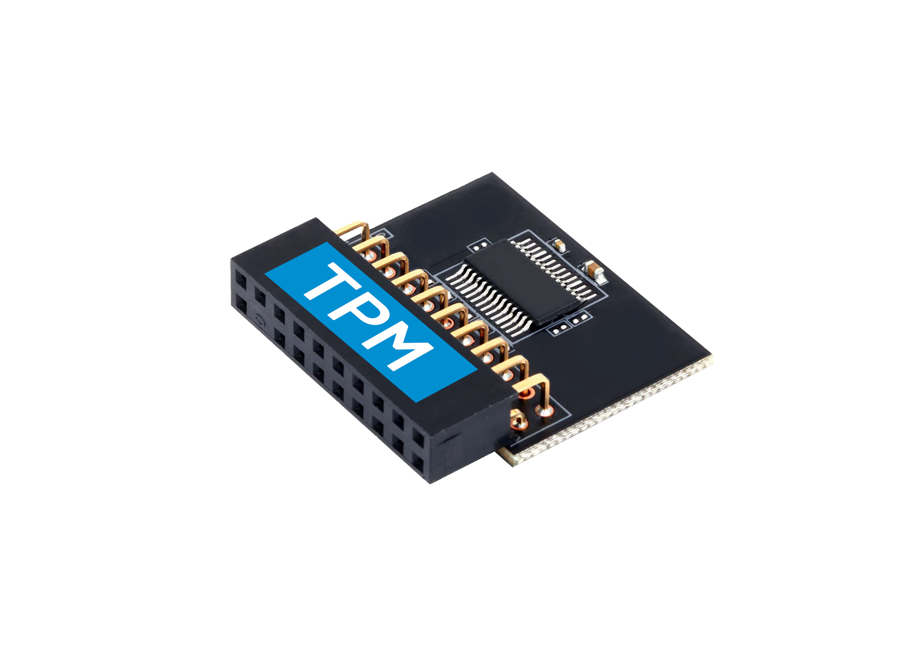

Trusted Platform Module (TPM)
TPM 2.0 required for Windows 11A dedicated hardware-based security microchip that securely stores cryptographic keys, credentials, and encryption measurements used by features like BitLocker.
Windows 11: specifically requires TPM 2.0.